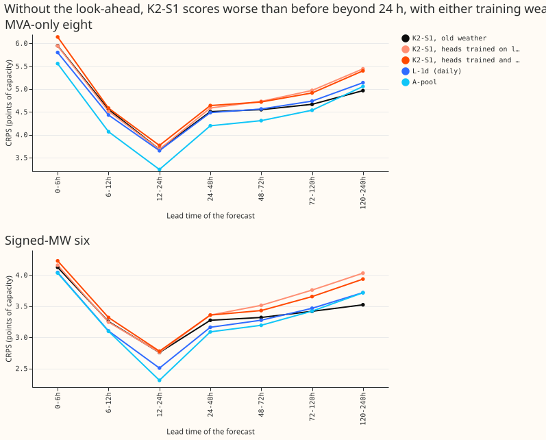
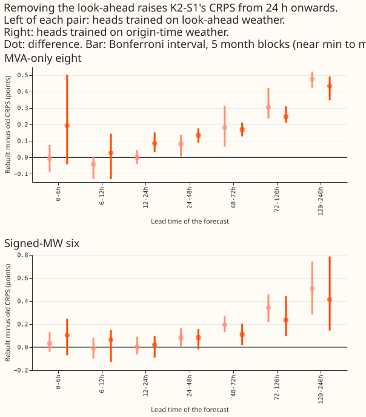

How much of K2-S1's score survives when its lag-free heads use only weather from the run issued at or before the forecast origin?
Take-home message: K2-S1's advantage over the daily lag-free network L-1d at 5 to 10 days is not there once its weather is limited to what was known at the forecast origin. With the lag-free heads still trained on the old weather, K2-S1 is 0.48 (eight) and 0.51 (six) points of capacity worse at 120 to 240 h, which isolates the look-ahead. With the heads retrained on origin-time weather the loss is 0.43 and 0.41, and also includes the missing lead input. By point estimate K2-S1 is then worse than L-1d in every lead band, but the Bonferroni intervals include zero except at the eight for 12 to 24 h, so L-1d is not shown to be better elsewhere. The next step is a lag-free head that also sees the lead time. Verdict: partly supported (see "Predictions"). Terms: the eight are the 8 Primaries with MVA-only (megavolt-ampere) telemetry and the six the 6 with signed-MW telemetry; K2-S1 is experiment 454's mixture of two lagged S1 and two lag-free heads; L-1d is experiment 511's daily-refit lag-free network; A-pool, A-pool minus lags, and R-DW are the networks of experiments 533, 537, and 539.


What was rebuilt
- Unchanged S1 heads. The S1 heads of experiment 454 already read weather from the run issued at the forecast origin, and their lag inputs sit at or before the origin. The S1 heads also read experiment 404's frozen lag-free table at past lag times only, which is not a look-ahead.
- Heads trained on look-ahead weather. The lag-free heads (experiment 404's "further" module, seeds 0 to 2) are refitted with experiment 531's code, which reproduced the stored table to 5e-6. They are trained as experiment 404 trained them, on the freshest run published before each valid time, and fed origin-time weather when scored. Call this the first rebuild.
- Heads trained on origin-time weather. The same module, loss, seeds, epochs, recency weights, and short-history cut, trained on experiment 397's rows instead: one row per Primary, forecast origin, and valid time, with origin and valid time before the refit date, leads up to 240 h, and no lead input (about 5 million rows per refit). Call this the second rebuild. The second rebuild was added after the first rebuild's scores were read, at the manager's request, so its predictions were not registered beforehand.
- Cells. Experiment 454's three seed pairs, each an equal-weight mixture of two S1 heads and two lag-free heads. Code reused from experiments 404, 454, 521, and 531 (copied into this folder).
- Weather check. All 1,142,520 rows on which the lag-free heads were scored (before the row filters of experiment 511's scoring) were matched to the summary of the run initialised at origin minus 9 h, with all 14 weather columns equal. Example: Primary D2, origin 2026-06-01 09:00 UTC, target 2026-06-07 15:30 UTC, run initialised 2026-06-01 00:00 UTC and published 09:00 UTC, lead 150.5 h, mean shortwave radiation 444.776 in both the table and the run. The check ties each row to its summary row, whose stored origin is the run time plus 9 h. The training rows of the second rebuild select origin and valid time before the refit date by assertion.
- Rows. Rows with no labelled event, experiment 511's row set, five folds of 511, July 2026 unused. Eight means the 8 Primaries with MVA-only (megavolt-ampere) telemetry, six the 6 Primaries with signed-MW telemetry.
Scores
Differences are rebuilt minus old K2-S1, in points of CRPS (continuous ranked probability score,
lower is better). Each cell shows the difference, the Bonferroni-widened month-block interval, the
folds with a positive difference, and the minimum detectable effect (MDE): 1.96 sqrt(2) sd /
sqrt(3), where sd is the standard deviation of the three cells' per-fold means. The
pre-registered Bonferroni count was 28; it is 56 (4 counted contrasts, 7 bands, 2 row sets).
Intervals are month-block bootstraps with 5 blocks (near the minimum to maximum of the folds). The
cells share seeds, so the MDE is optimistic.
Heads trained on look-ahead weather, minus old K2-S1
| Band | Eight | Six |
|---|---|---|
| 0-6h | -0.004 (-0.089 to +0.075; 2/5; MDE 0.14) | +0.033 (-0.040 to +0.130; 2/5; MDE 0.16) |
| 6-12h | -0.042 (-0.132 to +0.005; 1/5; MDE 0.12) | -0.009 (-0.098 to +0.080; 2/5; MDE 0.15) |
| 12-24h | -0.000 (-0.039 to +0.043; 2/5; MDE 0.05) | +0.003 (-0.063 to +0.091; 2/5; MDE 0.12) |
| 24-48h | +0.081 (+0.006 to +0.137; 4/5; MDE 0.07) | +0.083 (-0.004 to +0.165; 4/5; MDE 0.13) |
| 48-72h | +0.182 (+0.066 to +0.314; 5/5; MDE 0.11) | +0.194 (+0.130 to +0.268; 5/5; MDE 0.14) |
| 72-120h | +0.305 (+0.234 to +0.421; 5/5; MDE 0.14) | +0.342 (+0.216 to +0.457; 5/5; MDE 0.14) |
| 120-240h | +0.477 (+0.423 to +0.521; 5/5; MDE 0.20) | +0.508 (+0.286 to +0.743; 5/5; MDE 0.18) |
Heads trained on origin-time weather, minus old K2-S1
| Band | Eight | Six |
|---|---|---|
| 0-6h | +0.193 (-0.042 to +0.502; 4/5; MDE 0.16) | +0.104 (-0.069 to +0.247; 4/5; MDE 0.14) |
| 6-12h | +0.026 (-0.131 to +0.144; 4/5; MDE 0.15) | +0.065 (-0.127 to +0.150; 4/5; MDE 0.10) |
| 12-24h | +0.085 (+0.032 to +0.151; 5/5; MDE 0.07) | +0.021 (-0.091 to +0.095; 3/5; MDE 0.10) |
| 24-48h | +0.134 (+0.088 to +0.177; 5/5; MDE 0.09) | +0.084 (-0.020 to +0.157; 4/5; MDE 0.07) |
| 48-72h | +0.169 (+0.128 to +0.211; 5/5; MDE 0.09) | +0.111 (+0.019 to +0.204; 5/5; MDE 0.07) |
| 72-120h | +0.248 (+0.211 to +0.310; 5/5; MDE 0.10) | +0.237 (+0.097 to +0.442; 5/5; MDE 0.07) |
| 120-240h | +0.433 (+0.346 to +0.491; 5/5; MDE 0.10) | +0.413 (+0.144 to +0.786; 5/5; MDE 0.08) |
Heads trained on origin-time weather, minus L-1d
| Band | Eight | Six |
|---|---|---|
| 0-6h | +0.341 (-0.345 to +0.888; 4/5; MDE 0.16) | +0.187 (-0.182 to +0.628; 3/5; MDE 0.14) |
| 6-12h | +0.151 (-0.170 to +0.618; 3/5; MDE 0.15) | +0.216 (-0.195 to +0.677; 4/5; MDE 0.10) |
| 12-24h | +0.116 (+0.058 to +0.177; 5/5; MDE 0.07) | +0.271 (-0.021 to +0.478; 4/5; MDE 0.10) |
| 24-48h | +0.155 (-0.081 to +0.362; 4/5; MDE 0.09) | +0.196 (-0.127 to +0.454; 4/5; MDE 0.07) |
| 48-72h | +0.154 (-0.091 to +0.448; 4/5; MDE 0.09) | +0.155 (-0.131 to +0.392; 4/5; MDE 0.07) |
| 72-120h | +0.177 (-0.105 to +0.454; 4/5; MDE 0.10) | +0.188 (-0.109 to +0.434; 4/5; MDE 0.07) |
| 120-240h | +0.260 (-0.144 to +0.597; 4/5; MDE 0.10) | +0.217 (-0.135 to +0.580; 4/5; MDE 0.08) |
Absolute CRPS
| Band | Old K2-S1 | Heads trained on look-ahead | Heads trained on origin-time | L-1d | A-pool | A-pool minus lags | R-DW |
|---|---|---|---|---|---|---|---|
| eight, 24-48h | 4.506 | 4.587 | 4.640 | 4.485 | 4.197 | 4.764 | 4.266 |
| eight, 120-240h | 4.967 | 5.443 | 5.400 | 5.140 | 5.058 | 5.430 | 5.064 |
| eight, all | 4.763 | 5.086 | 5.068 | 4.855 | 4.682 | 5.136 | 4.713 |
| six, 24-48h | 3.275 | 3.358 | 3.359 | 3.162 | 3.089 | 3.462 | 3.069 |
| six, 120-240h | 3.523 | 4.031 | 3.936 | 3.719 | 3.717 | 3.995 | 3.719 |
| six, all | 3.423 | 3.770 | 3.698 | 3.493 | 3.457 | 3.782 | 3.449 |
Predictions
- P1 (same score as the old K2-S1 below 24 h, inside the MDE). Held for the first rebuild: the largest difference is 0.042 against an MDE of 0.12. Failed for the second rebuild at the eight (12 to 24 h: +0.085 against an MDE of 0.07, interval +0.03 to +0.15; 0 to 6 h: +0.193 against 0.16, interval -0.04 to +0.50, which includes zero). Retraining on all leads without a lead input may cost short-lead skill that the day-ahead feed gave the old heads; this is not tested.
- P2 (a fall of about 0.17 at the eight and 0.20 at the six at 120 to 240 h, within 0.05). Failed for both rebuilds: +0.477 and +0.508 for the first, +0.433 and +0.413 for the second. The falls are 2.1 to 2.8 times the prediction. The pre-registered P2 failed under both rebuilds; the direction was right.
- The 24 h boundary is not sharp. The 24 to 48 h difference for the first rebuild at the eight is +0.081 (interval +0.006 to +0.137), which exceeds its MDE of 0.07 and barely clears zero.
Caveats
- No rebuild has a lag-free head that sees the lead time, and L-1d does. The gap to L-1d therefore mixes the loss of the look-ahead with the missing lead input.
- The second rebuild trains on about 10 origins per valid time, so about 10 times as many rows and gradient steps as experiment 404's head, and each valid time is weighted by its origin count. That confounds any comparison of the two training feeds.
- The "report" row set (D15 and D18) in the stored tables is not part of the Bonferroni count.
- NGED's event labels are incomplete, so clean rows may hold unlabelled events.
- The comparison with A-pool minus lags in the absolute table is a comparison of different networks. Only A-pool against A-pool minus lags isolates lags (5.058 against 5.430 at the eight, 3.717 against 3.995 at the six, 120 to 240 h).
Correction table: gaps to K2-S1 that change
Gap = reference CRPS minus K2-S1 CRPS in points of capacity (positive: K2-S1 is better). Each cell reads: old K2-S1 → rebuilt with heads trained on look-ahead weather → rebuilt with heads trained on origin-time weather. Point estimates only.
Eight (MVA-only Primaries)
| Band | L-1d | L-Ww | A-pool | A-pool minus lags | R-DW |
|---|---|---|---|---|---|
| 0-6h | -0.15 → -0.14 → -0.34 | -0.07 → -0.06 → -0.26 | -0.39 → -0.39 → -0.58 | +0.11 → +0.11 → -0.08 | -0.37 → -0.36 → -0.56 |
| 6-12h | -0.12 → -0.08 → -0.15 | +0.02 → +0.06 → -0.01 | -0.49 → -0.45 → -0.52 | +0.36 → +0.40 → +0.34 | -0.48 → -0.43 → -0.50 |
| 12-24h | -0.03 → -0.03 → -0.12 | +0.06 → +0.06 → -0.03 | -0.44 → -0.44 → -0.53 | +0.24 → +0.24 → +0.16 | -0.29 → -0.29 → -0.38 |
| 24-48h | -0.02 → -0.10 → -0.15 | +0.07 → -0.01 → -0.07 | -0.31 → -0.39 → -0.44 | +0.26 → +0.18 → +0.12 | -0.24 → -0.32 → -0.37 |
| 48-72h | +0.01 → -0.17 → -0.15 | +0.10 → -0.08 → -0.07 | -0.24 → -0.42 → -0.41 | +0.27 → +0.09 → +0.10 | -0.19 → -0.37 → -0.36 |
| 72-120h | +0.07 → -0.23 → -0.18 | +0.15 → -0.15 → -0.09 | -0.13 → -0.43 → -0.38 | +0.33 → +0.02 → +0.08 | -0.09 → -0.40 → -0.34 |
| 120-240h | +0.17 → -0.30 → -0.26 | +0.21 → -0.26 → -0.22 | +0.09 → -0.39 → -0.34 | +0.46 → -0.01 → +0.03 | +0.10 → -0.38 → -0.34 |
Six (signed-MW Primaries)
| Band | L-1d | L-Ww | A-pool | A-pool minus lags | R-DW |
|---|---|---|---|---|---|
| 0-6h | -0.08 → -0.12 → -0.19 | +0.01 → -0.02 → -0.10 | -0.09 → -0.12 → -0.19 | +0.14 → +0.11 → +0.03 | -0.12 → -0.15 → -0.22 |
| 6-12h | -0.15 → -0.14 → -0.22 | -0.03 → -0.02 → -0.09 | -0.16 → -0.15 → -0.22 | +0.20 → +0.21 → +0.13 | -0.33 → -0.32 → -0.39 |
| 12-24h | -0.25 → -0.25 → -0.27 | -0.16 → -0.16 → -0.18 | -0.45 → -0.45 → -0.47 | +0.14 → +0.13 → +0.11 | -0.43 → -0.43 → -0.45 |
| 24-48h | -0.11 → -0.20 → -0.20 | -0.04 → -0.12 → -0.12 | -0.19 → -0.27 → -0.27 | +0.19 → +0.10 → +0.10 | -0.21 → -0.29 → -0.29 |
| 48-72h | -0.04 → -0.24 → -0.16 | +0.02 → -0.17 → -0.09 | -0.13 → -0.32 → -0.24 | +0.23 → +0.03 → +0.12 | -0.13 → -0.32 → -0.24 |
| 72-120h | +0.05 → -0.29 → -0.19 | +0.11 → -0.23 → -0.12 | +0.00 → -0.34 → -0.23 | +0.34 → +0.00 → +0.11 | -0.01 → -0.35 → -0.24 |
| 120-240h | +0.20 → -0.31 → -0.22 | +0.25 → -0.26 → -0.17 | +0.19 → -0.31 → -0.22 | +0.47 → -0.04 → +0.06 | +0.20 → -0.31 → -0.22 |
Experiments whose gap to K2-S1 used the old weather
The sibling task that writes correction notes on those pages uses this list. Classified from each page's headline only, so each entry is a pointer and not a conclusion.
- The conclusion that a model stays behind K2-S1 may not survive: 510 (L-Ww behind K2-S1 by 0.156 and 0.132 over all leads), 511 (L-1d behind by 0.091 and 0.071), 521 (K2-S1 advantage at 120 to 240 h). The retrained K2-S1 is worse than both L-1d and L-Ww at 24 h and beyond by point estimate, but only where intervals exclude zero should a flip be stated. A negative gap means K2-S1 is the worse forecast. Below 12 h K2-S1 was already behind L-Ww and L-1d at the eight in the old scores, and the retrained heads widen those gaps.
- Probably stands, being lag-free against lag-free or about short-lead events: 519, 523, 524, 525 (lag-free contrasts); 468 (events, lead not stated in the headline).
- Not assessed: 470, 527, 529, 530.